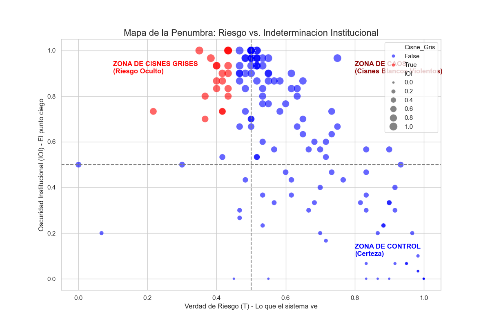
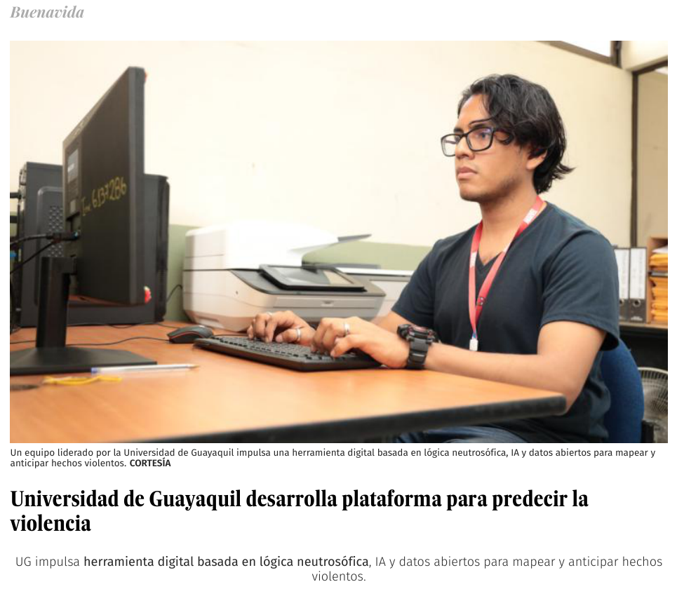

Plataforma de Análisis
Predictivo de la Violencia
Proyecto FCI · Código FCI-018-2024 · Gemelo digital Guayaquil Neutro-Safe
Dataset · Modelos computacionales · Publicaciones · Plataforma — Fondos Concursables de Investigación · 2024–2026
El proyecto en cifras
del gemelo digital
originales (2023–2024)
georreferenciados
(“Cisnes Grises”)
de código abierto
procesados con 4 LLMs
artículo del proyecto
internacionales + regionales
Integrantes del proyecto
Facultad interviniente: Ciencias Matemáticas y Físicas · Carrera de Software · Ingreso 01/10/2024
Diagnóstico estructural, no predicción policial
- Predictive policing: no anticipa delitos individuales.
- No genera scoring de personas ni de hogares.
- No orienta despliegue táctico-policial.
- No colapsa la incertidumbre en un solo número.
- Diagnóstico de vulnerabilidad estructural actual por sector.
- Representación explícita de la indeterminación (T, I, F).
- Análisis causal de condiciones necesarias (N-fsQCA + NCA).
- Evidencia para política social, no para represión.
Dataset: arquitectura de cinco capas
Licencias: datos CC BY 4.0 · código MIT · depósito Zenodo preparado.
Marco técnico neutrosófico
Neutrosofía SVN
Cada señal se modela con la terna (Verdad, Indeterminación, Falsedad): la incertidumbre no se colapsa en un escalar.
IPVE triádico
Índice Pluriversal de Vulnerabilidad Estructural en [0,1]³, agregado con SVNWA (media ponderada neutrosófica).
N-fsQCA + NCA
Condiciones necesarias sobre conjuntos difusos neutrosóficos: qué factores estructurales son imprescindibles.
Métrica IOI
I = 1 − 2|V − 0.5| cuantifica la indeterminación de cada zona y alimenta el Mapa de la Penumbra.
Stance detection LLM
Detección de postura sobre la prensa para construir un prior neutrosófico basado en literatura.
11 módulos Python
neutrosophic_core · ipve_engine · digital_twin · narrativa_mediatica · paraconsistency_detector · interventions_db…
Cisnes Grises y el Mapa de la Penumbra
- 20 zonas de riesgo oculto (“Cisnes Grises”): sectores donde los indicadores tradicionales lucen tranquilos pero la estructura causal indica vulnerabilidad.
- Mapa de la Penumbra: visualiza dónde el sistema sabe que no sabe — la indeterminación (IOI) como capa cartográfica de primera clase.
- Prior mediático: la narrativa de prensa silencia drivers estructurales; el gemelo lo corrige con evidencia multicapa.

Artículo Q1 del proyecto
Measuring Social Emergencies Through Fuzzy Qualitative Comparative Analysis: A Calibration Framework Using Normalized General Continuous Linguistic Variables
Marco de calibración fsQCA para medir emergencias sociales con variables lingüísticas normalizadas (NGCLV) — exactamente la etapa de calibración que emplea el gemelo digital.
Generative AI and Probabilistic Trees for Linguistic Data Summarization — MAKE (MDPI), Q1, IF 6.0
Convierte las salidas neutrosóficas del gemelo (IPVE, IOI, condiciones necesarias) en narrativa verificable para decisores.
Publicaciones del proyecto
Causal Modeling of Violence in the Metropolitan Area of Guayaquil: Neutrosophic Evidence and Analysis of Necessary Conditions
PUBLICADOEmpirical Pragmatics of Violent Silence: Press Narratives about Guayaquil (2025) as Illocutionary Acts of Structural Erasure
PUBLICADONeutrosophic Framework for Violence Prediction in Urban Environments
PUBLICADOSmart Urban Security Diagnosis via LLM-Assisted Neutrosophic Fuzzy Set QCA: Evidence from Guayaquil
ACEPTADO · WORLDS4 2026 · LONDRESArtículos científicos regionales
Enseñar a medir la duda con inteligencia artificial: propuesta educativa para analizar las causas de la violencia en Guayaquil desde la indeterminación y la incertidumbre
Neutrosophic Analysis of Competing Hypotheses (NACH): A Novel Framework for Complex Causal Modeling with Applications to Climate Change and Urban Violence
El proyecto en la prensa nacional
- Diario Expreso (Buenavida): “Universidad de Guayaquil desarrolla plataforma para predecir la violencia”.
- Cobertura del equipo: “Un equipo liderado por la Universidad de Guayaquil impulsa una herramienta digital basada en lógica neutrosófica, IA y datos abiertos para mapear y anticipar hechos violentos.”
- Visibilidad institucional: el proyecto FCI posiciona a la FCMF-UG en la conversación pública sobre seguridad y ciencia de datos.
expreso.ec › buenavida › universidad-guayaquil-desarrolla-plataforma-predecir-violencia

“Camino B”: anti-predictive-policing por diseño
- Granularidad mínima a nivel de sector: nunca individuos ni hogares.
- Bitácora de auditoría inmutable: toda consulta queda registrada (ethical_safeguards.py).
- Prohibiciones codificadas en la propia plataforma, no solo declaradas.
Diagnosticar la estructura,
no perseguir el síntoma.
Un gemelo digital que trata la indeterminación como información — y la ética como arquitectura, no como apéndice.
Universidad de Guayaquil · Facultad de Ciencias Matemáticas y Físicas
Leyva · Cevallos · Guijarro · Batista (UBE) · Smarandache (UNM)